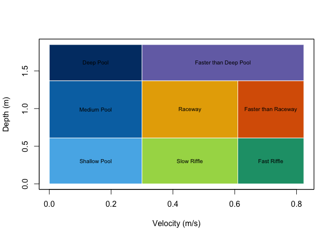

Development status: version 0.1.0; not yet on CRAN.
hydromeso classifies water depth and velocity into nominal fluvial hydraulic mesohabitat categories. It supports numeric values, ordinary tables, terra::SpatVector features, rasters, multiple hydraulic scenarios, and validated custom rectangular schemes. Its only non-base runtime dependency is terra.
Installation
# From a local source checkout:
install.packages("hydromeso", repos = NULL, type = "source")Default classification
The authoritative default uses metres and metres per second. Lower bounds are inclusive and upper bounds are exclusive.
| Class | Mesohabitat | Depth (m) | Velocity (m/s) |
|---|---|---|---|
| 1 | Shallow Pool | < 0.61 | < 0.30 |
| 2 | Medium Pool | >= 0.61 and < 1.37 | < 0.30 |
| 3 | Deep Pool | >= 1.37 | < 0.30 |
| 4 | Slow Riffle | < 0.61 | >= 0.30 and < 0.61 |
| 5 | Fast Riffle | < 0.61 | >= 0.61 |
| 6 | Raceway | >= 0.61 and < 1.37 | >= 0.30 and < 0.61 |
| 7 | Faster than Raceway | >= 0.61 and < 1.37 | >= 0.61 |
| 8 | Faster than Deep Pool | >= 1.37 | >= 0.30 |

Quick examples
classify_mesohabitat_values(
depth = c(0, 0.61, 1.37, NA),
velocity = c(0, 0.30, 0.61, 0.2)
)
#> depth velocity mesohabitat_class mesohabitat
#> 1 0.00 0.00 1 Shallow Pool
#> 2 0.61 0.30 6 Raceway
#> 3 1.37 0.61 8 Faster than Deep Pool
#> 4 NA 0.20 NA <NA>
classified <- classify_mesohabitat_table(
hydromeso_example, "depth", "velocity"
)
head(classified)
#> x y depth velocity mesohabitat_class mesohabitat
#> 1 500000 4400000 0.2 0.1 1 Shallow Pool
#> 2 500010 4400010 0.8 0.1 2 Medium Pool
#> 3 500020 4400020 1.5 0.1 3 Deep Pool
#> 4 500030 4400030 0.2 0.4 4 Slow Riffle
#> 5 500040 4400040 0.2 0.8 5 Fast Riffle
#> 6 500050 4400050 0.8 0.4 6 Raceway
summarize_mesohabitat(classified)
#> class_id label record_count percentage missing_count
#> 1 1 Shallow Pool 3 17.647059 1
#> 2 2 Medium Pool 3 17.647059 1
#> 3 3 Deep Pool 2 11.764706 1
#> 4 4 Slow Riffle 2 11.764706 1
#> 5 5 Fast Riffle 2 11.764706 1
#> 6 6 Raceway 2 11.764706 1
#> 7 7 Faster than Raceway 2 11.764706 1
#> 8 8 Faster than Deep Pool 1 5.882353 1
points <- mesohabitat_example_vector()
classified_points <- classify_mesohabitat_vector(points, "depth", "velocity")
classified_points
#> class : SpatVector
#> geometry : points
#> dimensions : 18, 4 (geometries, attributes)
#> extent : 500000, 500170, 4400000, 4400170 (xmin, xmax, ymin, ymax)
#> coord. ref. : WGS 84 / UTM zone 15N (EPSG:32615)
#> names : depth velocity mesohabitat_class mesohabitat
#> type : <num> <num> <int> <chr>
#> values : 0.2 0.1 1 Shallow Pool
#> 0.8 0.1 2 Medium Pool
#> 1.5 0.1 3 Deep Pool
#> ...
hydraulics <- mesohabitat_example_rasters()
classes <- classify_mesohabitat_raster(hydraulics$depth, hydraulics$velocity)
classes
#> class : SpatRaster
#> size : 2, 4, 1 (nrow, ncol, nlyr)
#> resolution : 10, 10 (x, y)
#> extent : 500000, 500040, 4400000, 4400020 (xmin, xmax, ymin, ymax)
#> coord. ref. : WGS 84 / UTM zone 15N (EPSG:32615)
#> source(s) : memory
#> categories : mesohabitat
#> name : mesohabitat
#> min value : Shallow Pool
#> max value : Faster than Deep Pool
summarize_mesohabitat(classes)
#> scenario class_id label cell_count area_m2 hectares
#> 1 mesohabitat 1 Shallow Pool 1 100.0801 0.01000801
#> 2 mesohabitat 2 Medium Pool 1 100.0800 0.01000800
#> 3 mesohabitat 3 Deep Pool 1 100.0800 0.01000800
#> 4 mesohabitat 4 Slow Riffle 1 100.0801 0.01000801
#> 5 mesohabitat 5 Fast Riffle 1 100.0800 0.01000800
#> 6 mesohabitat 6 Raceway 1 100.0800 0.01000800
#> 7 mesohabitat 7 Faster than Raceway 1 100.0800 0.01000800
#> 8 mesohabitat 8 Faster than Deep Pool 1 100.0800 0.01000800
#> square_kilometres acres percentage
#> 1 0.0001000801 0.02473032 12.5
#> 2 0.0001000800 0.02473032 12.5
#> 3 0.0001000800 0.02473032 12.5
#> 4 0.0001000801 0.02473032 12.5
#> 5 0.0001000800 0.02473032 12.5
#> 6 0.0001000800 0.02473032 12.5
#> 7 0.0001000800 0.02473032 12.5
#> 8 0.0001000800 0.02473032 12.5Custom schemes use the same engine:
rules <- data.frame(
class_id = c(1L, 2L), label = c("Slow", "Fast"),
depth_min = c(0, 0), depth_max = c(Inf, Inf),
velocity_min = c(0, 0.5), velocity_max = c(0.5, Inf)
)
custom <- meso_scheme(rules, name = "Two velocity classes")
classify_mesohabitat_values(c(0.2, 1), c(0.2, 0.8), custom)
#> depth velocity mesohabitat_class mesohabitat
#> 1 0.2 0.2 1 Slow
#> 2 1.0 0.8 2 FastInterpretation and citation
The output is a depth-velocity hydraulic classification, not proof of habitat quality or fish occupancy. Interpretation depends on species and life stage, stream type, substrate, cover, connectivity, water quality, temperature, flow regime, hydraulic-model resolution, and local validation. Class IDs are labels, not ordinal scores. Users must decide how dry cells are represented in their own HEC-RAS or other model outputs; dry_threshold = NULL preserves the exact scheme and classifies zero depth and zero velocity as Class 1.
The default eight-class table is from Cordero and Harris (Preprint), Semi-Supervised and Supervised Machine Learning Approaches to Predicting Fluvial Mesohabitats from Satellite Data, doi:10.2139/ssrn.7100727. The broader framework is informed by Aadland (1993), Stream Habitat Types: Their Fish Assemblages and Relationship to Flow, doi:10.1577/1548-8675(1993)013<0790:SHTTFA>2.3.CO;2.
Source code and issue tracking are available at github.com/el-cordero/hydromeso.